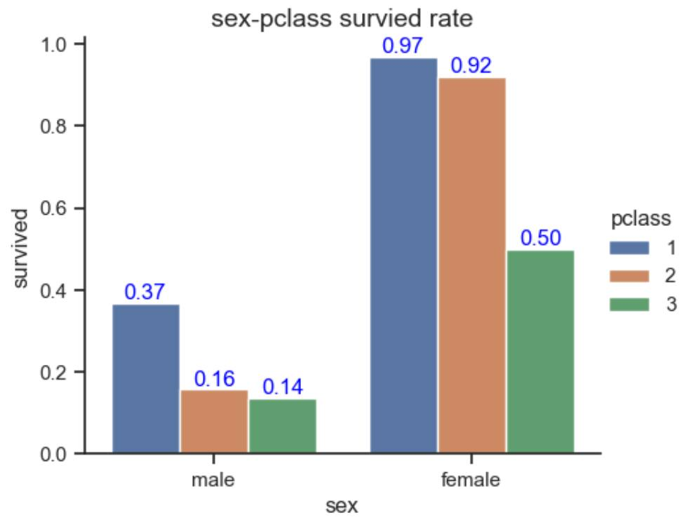
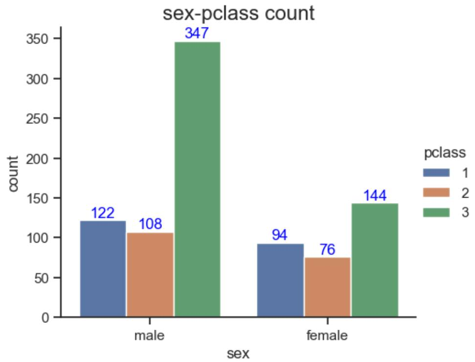
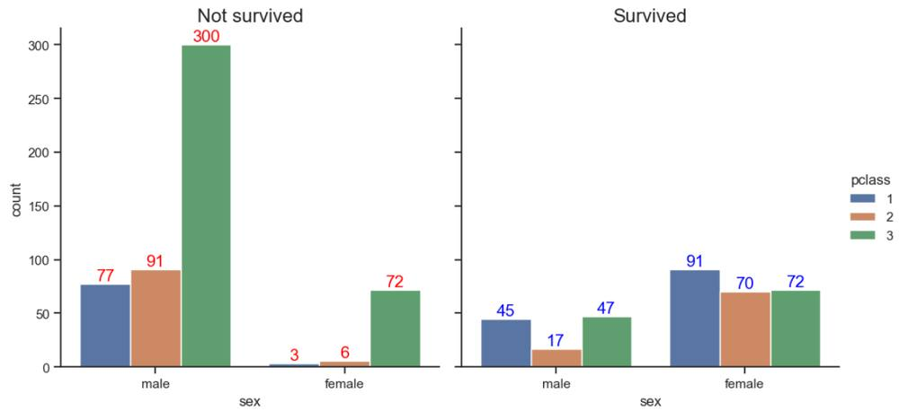

第 1 页 · catplot()命令中参数kind='bar'绘制条形图，调用barplot()命令完成。
catplot()命令中参数kind='bar'绘制条形图，调用barplot()命令完成。
g = sns.catplot(x="sex", y="survived", hue="pclass", kind="bar", data=tit, height=4, aspect=1.2, ci=None)
ax = g.ax # 返回当前子图
for p in ax.patches: # 遍历图中所有条形, ha:水平居中, va:垂直底部对齐, '%.2f' 2位小数
ax.text(p.get_x() + p.get_width()/2, p.get_height(), '%.2f' % p.get_height(),
fontsize=12, color='blue', ha='center', va='bottom') # 在条形上端标注数值
ax.set_title('sex-pclass survied rate', fontsize=16)
四、分类条形图
上例计算并标注了每类客舱中男性/女性的平均生还率。先遍历ax.patches得到每个条形对象p，通过p.get_x()和p.get_height()得到每个条的x轴位置和y轴高度(y数值)，再使用ax.text()将数值标注在条的顶部，p.get_x() + p.get_width()/2调整标注的x位置。相关计算和统计工作由Seaborn自动完成，由此见Seaborn特别适合统计类数据绘图。同时，应将Seaborn和Matplotlib配合以实现更精准的图形控制。

第 2 页 · 将上面命令的参数改为kind='count'，并删除y参数，可绘制计数条形图,统计每类客舱男女生还人数。
将上面命令的参数改为kind='count'，并删除y参数，可绘制计数条形图,统计每类客舱男女生还人数。
g = sns.catplot(x="sex", hue="pclass", kind="count", data=tit, height=4, aspect=1.2, ci=None)
ax = g.ax
for p in ax.patches: # 遍历图中所有条形
ax.text(p.get_x() + p.get_width()/2, p.get_height(), p.get_height(),
fontsize=12, color='blue', ha='center', va='bottom')
ax.set_title('sex-pclass count', fontsize=16)
四、分类条形图

第 3 页 · 增加col='survived'参数则可分开统计每类客舱中男性/女性生还和未生还的人数。
增加col='survived'参数则可分开统计每类客舱中男性/女性生还和未生还的人数。
g = sns.catplot(x="sex", hue="pclass", kind="count", col='survived', data=tit, ci=None)
for index, ax in enumerate(g.axes.ravel()): # ravel()将g.axes二维数组转为一维数组
if index==1:
c ='blue' # "生还"蓝色
title = 'Survived'
else:
c ='red' # "未生还"红色
title = 'Not survived'
for p in ax.patches: # 在条形顶端标注数值
ax.text(p.get_x() + p.get_width()/2, p.get_height(), p.get_height(),
fontsize=14, color=c, ha='center', va='bottom')
ax.set_title(title, fontsize=16)
四、分类条形图
